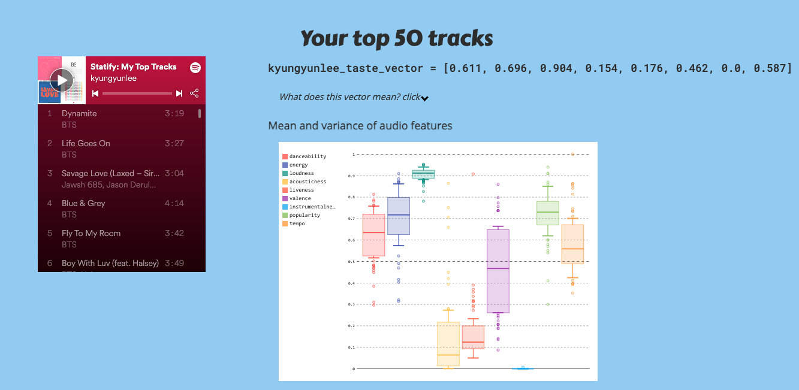
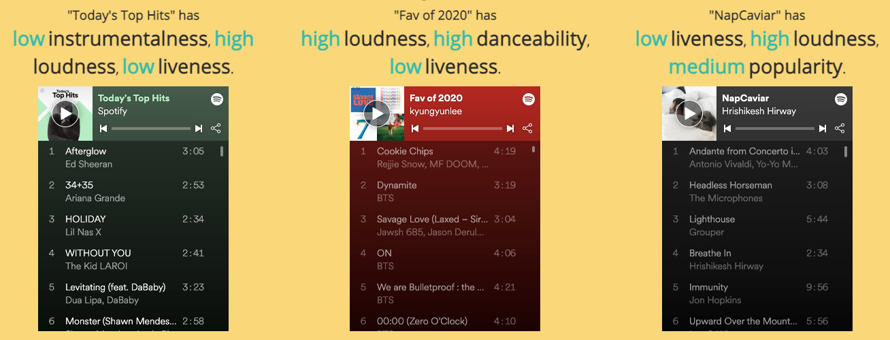

NOTE: Heroku server may be sleeping. It might take a while to wake up Link to website
This was presented at PyCascades 2019 in Seattle, WA, USA.
(This post was written in 2020)
Statify analyzes your listening history and returns some basic statistics. My top tracks have high loundness, high energy and high danceability. Most of my tracks have vocals, so very low instrumentalness.

Features used
Also, you can see how different or similar your playlist is compared to other playlists.

Below is an embedding of tracks from both playlists. Each dot represents a track. If dots are closer together, it means those tracks are similar in terms of chosen audio features.
Here you can see that “Today’s Top Hit” and my playlist of “Fav of 2020” are quite similar (I listened to a lot of popular pop in 2020.) The green dots are “NapCaviar” playlist, consisting of calm and mellow nap time songs. So, you see they are in a quite distinct space.
Spotify API offers various pre-computed audio features, such as danceability, instrumentalness and acousticness, for each track. All I did was to retrieve these data and plot them!
p.s. Might be a bit slow on load, since Heroku keeps unvisited sites dormant after a while.